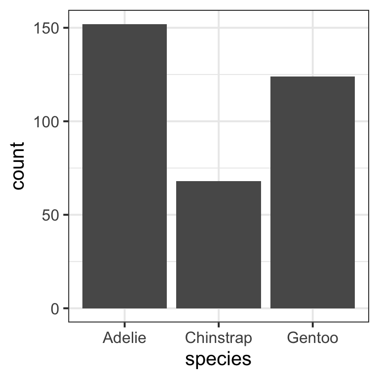

Formatting resources
This page contains formatting resources that will help you finalise your report formatting prior to submission.
1 APA style reporting
Check the following guide for reporting numbers and statistics in APA style (7th edition).
2 Figures
2.1 Combining plots
You can combine multiple plots into a single figure using the functions | and / from library(patchwork).
Suppose you stored four plots into objects named plt1, plt2, plt3, plt4. To combine the four plots into a single figure with 2 rows and 2 columns, you can use:
(plt1 | plt2) / (plt3 | pl4)The vertical bar | places figures side by side. The forward slash / starts a new row.
2.2 Reducing figure size
You can adjust the figure height and width with the following code chunk options: fig.height = ?, fig.width = ?.
Trying different numbers by trial-and-error, substitute numbers where the ? are, and adjust as needed: for example, 5 and 4, 12 and 8, etc. Always keep in mind, that the figure labels should still be legible in your resulting plots.
```{r, fig.height = 5, fig.width = 4}
# your code to display the figure here
```2.3 Referencing figures
Step 1. Create a unique label for the code chunk that displays the figure, in this case UniqueFigureLabel but you should use a more descriptive name.
```{r UniqueFigureLabel, fig.cap = "Write a figure caption here"}
library(tidyverse)
library(palmerpenguins) # for the penguins example data we are using here
pltSpecies <- ggplot(penguins, aes(x = species)) +
geom_bar()
pltSpecies
```To reference a figure in the Rmd file, for example the one above, you would write:
Figure \@ref(fig:UniqueFigureLabel) displays...
which, when you Knit to PDF, becomes:
Figure 1 displays…
3 Tables
We will use example data from library(palmerpenguins) about the body_mass_g of different species of penguins.
3.1 Pretty PDF tables
Suppose you created a descriptives table and stored it into tbl:
library(tidyverse)
library(palmerpenguins) # for the penguins example data we are using here
tbl <- penguins |>
group_by(species) |>
summarise(M = mean(body_mass_g, na.rm = TRUE),
SD = sd(body_mass_g, na.rm = TRUE))
tbl# A tibble: 3 × 3
species M SD
<fct> <dbl> <dbl>
1 Adelie 3701. 459.
2 Chinstrap 3733. 384.
3 Gentoo 5076. 504.It wouldn’t be appropriate to show this R printout in a paper/report/dissertation. Instead, you can create a properly formatted table for a PDF report using the kbl() or kable() functions from library(kableExtra).
```{r, echo=FALSE}
library(kableExtra)
tbl |>
kbl(digits = 2, booktabs = TRUE,
caption = "Write a table caption here")
```| species | M | SD |
|---|---|---|
| Adelie | 3700.66 | 458.57 |
| Chinstrap | 3733.09 | 384.34 |
| Gentoo | 5076.02 | 504.12 |
The provided options are:
-
digits = 2, to format numbers to only have 2 decimal places -
booktabs = TRUE, to create “book-style” tables, i.e. tables with horizontal rows only -
caption = "Write a table caption here", to provide a table caption
3.2 Referencing tables
This is a continuation of the previous example, where we created a descriptives table and stored it into tbl. Please note that tbl is not a kbl()/kable() yet.
To reference a table you need to pick a unique label for the code chunk that displays the table, in this case UniqueTableLabel but you should use a more descriptive name.
You must also ensure that the table has a caption for the referencing to work.
```{r UniqueTableLabel, echo=FALSE}
library(kableExtra)
tbl |>
kbl(digits = 2, booktabs = TRUE,
caption = "Write here a table caption")
```| species | M | SD |
|---|---|---|
| Adelie | 3700.66 | 458.57 |
| Chinstrap | 3733.09 | 384.34 |
| Gentoo | 5076.02 | 504.12 |
In the Rmd file, the table is referenced as:
Table \@ref(tab:UniqueTableLabel) displays...
which, when you knit to PDF, is displayed as:
Table 1 displays…
For details on styling PDF tables, see this link.
4 Hiding code and/or output
To not show the code of an R code chunk, and only show the output, write:
```{r, echo=FALSE}
# code goes here
```To show the code of an R code chunk, but hide the output, write:
```{r, results='hide'}
# code goes here
```To hide both text output and figures, use:
```{r, results='hide', fig.show='hide'}
# code goes here
```To hide both code and output of an R code chunk, write:
```{r, include=FALSE}
# code goes here
```5 Successful knitting checklist
Tip
Fixing errors is an iterative process
If you are getting errors when knitting an Rmd file, please try the following steps in order.
Once you have identified an error and fixed it, knit again to spot the next error in the file.
R will always stop at the first error, rather than listing all errors in your file. As such, fixing errors is an iterative process of spotting the first error to appear in your file, then fixing it, and continuing this way.
Work through this checklist systematically when troubleshooting knitting issues:
Prerequisites and Setup
-
Step 1: Type the following in the Console and press Enter:
install.packages("tinytex")Step 2: Next, type the following in the console and press Enter:
tinytex::install_tinytex(force = TRUE)Please note that the two lines above should not be included in your Rmd file. They are only to be run once in the Console.
Document Structure
-
--- title: "Title goes here" author: "Author goes here" date: "Date goes here" output: bookdown::pdf_document2 toc: false ---⚠️ Common YAML Issues
- The file won’t knit if you forget to open and close the two delimiters
--- - The file won’t knit if you use uppercase incorrectly (e.g.,
toc: FALSEortoc: Falsewill lead to errors)
- The file won’t knit if you forget to open and close the two delimiters
Code Chunk Issues
```{r plt freq distr}
``````{r plt_freq_distr}
``````{r plt-freq-distr}
``````{r pltFreqDistr}
```-
⚠️ Example of Duplicate Labels (Fix This!)
```{r pltHistogram} ``````{r pltHistogram} # This is a duplicate! ```
```{r, plt-freq-distr-example}
``````{r plt-freq-distr-example}
```Mathematical Symbols and Special Characters
-
Examples of Proper Math Formatting
Example 1: Consider \(\cup\) in \(P(A \cup B)\). This should be written as
$P(A \cup B)$and you should not directly copy and paste the \(\cup\) symbol into a comment or text.Example 2: Approximately equal to (\(\approx\)) should also only appear inside of an equation such as
p \approx 0. You should not directly copy and paste this symbol into a comment or text.Example 3: \(\alpha\) should be written within an equation as
$\alpha$. You should not directly copy and paste this symbol into a comment or text.Example 4: \(H_{0}\) should be written
$H_{0}$. You should not directly copy and paste this symbol into a comment or text.
File Management
Final Notes
💡 Pro Tip
Bookmark/print this checklist and work through it systematically whenever you encounter knitting errors. Most issues can be resolved by carefully following these steps!